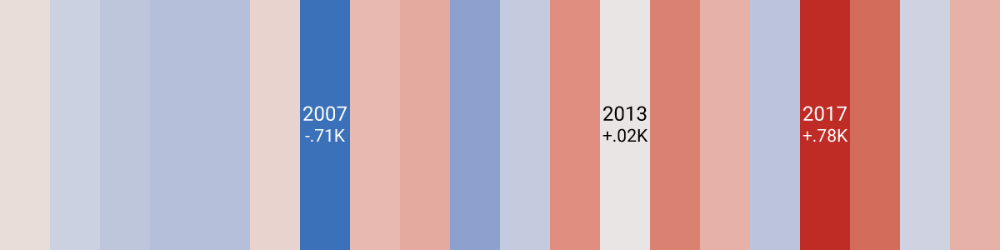
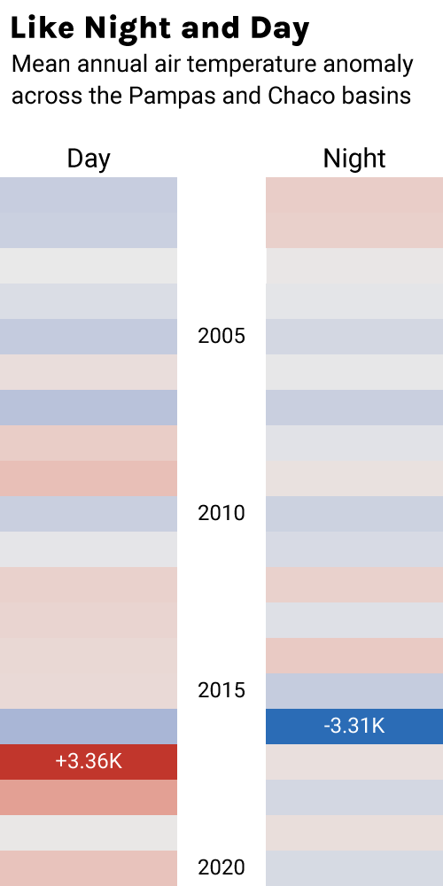
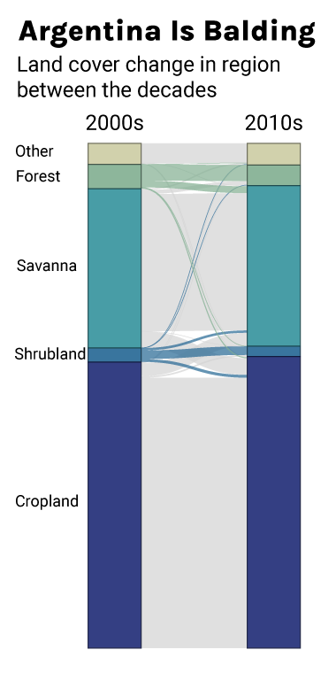
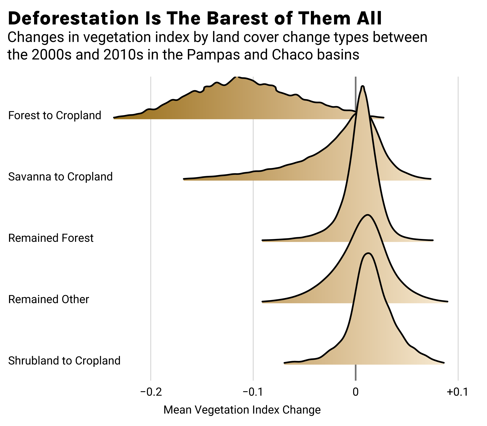
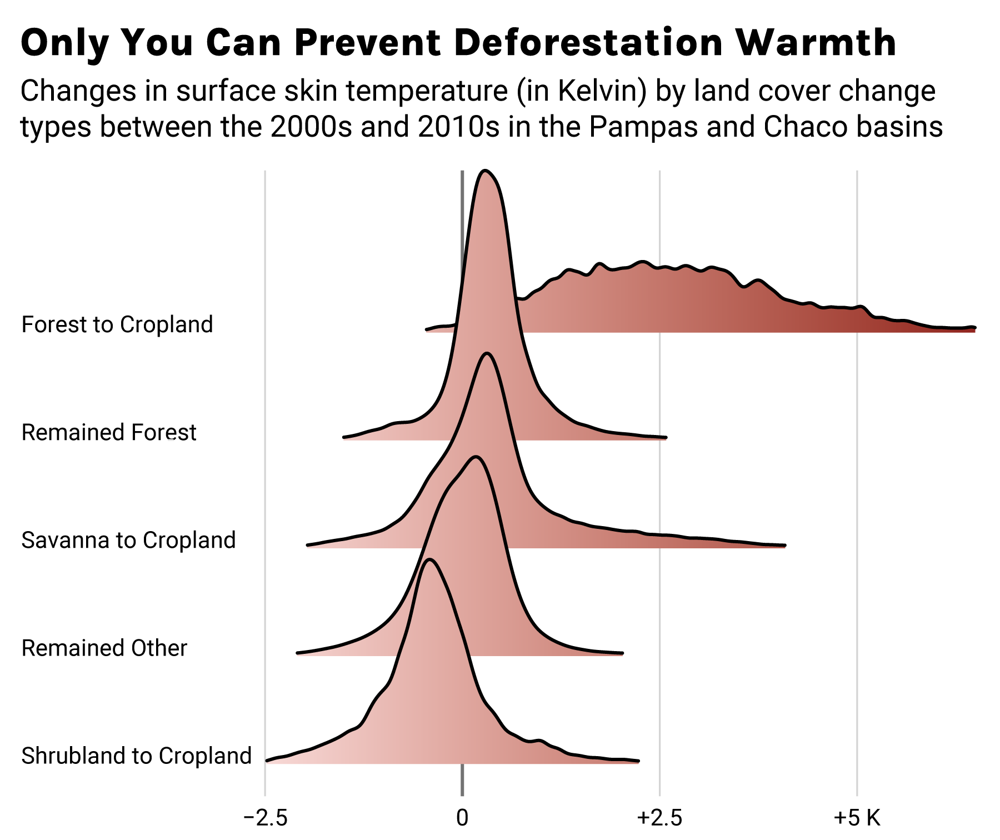

In many European languages (but not English), "the Pampas" is used pejoratively to describe a location that is remote, cut off from the rest of civilization. I was therefore surprised to find out just how connected the Pampas is to the global economy. The region is the world's leading producer of soybeans, corn, wheat, and barley. To keep up with this demand, the region has seen significant transformation to its land. Significant portions of the region have been transformed into limitless croplands. Unfortunately, the agricultural industry has taken a hit in significant years. Historic droughts and increasing temperatures have greatly reduced regional crop output.
Did you think that the divider above was simply for aesthetics? Well, think again! The divider actually records how different the annual mean temperature is from the long-term mean temperature, averaged across the Pampas and Chaco regions of Argentina. Let's examine the same chart in greater detail.
This chart shows how mean temperatures have changed over the last 20 years with respect to the 20-year average. Here, we see that mean annual temperatures have been creeping up in Argentina over the past two decades, like any other region on Earth. Aside from the obvious yet contentious explanation (global anthropogenic climate change) for increasing average temperatures, something else may be at play at the regional level to cause mean annual temperatures to fluctuate rather wildly. As an aspiring climate scientist, I was driven to investigate the factors that could affect the temperatures observed in greater detail. To this end, I sought to understand if land cover change itself could be behind the region's recent warmth and reduced agricultural output.
 I began my analysis by looking at how mean annual temperatures differ depending on the time of day the data was sampled. Weather station data was gathered for all weather stations located in the Pampas and Chaco regions collecting data for at least half of the months in the 2000s and 2010s. The annual mean for average temperatures, max temperatures (daytime), and min temperatures (nighttime) were taken for each yeary timestep. I then calculated the residual for each year. That is, how different is the yearly mean from the mean across the 2000s and 2010s.
I made two interesting findings. One, the pattern of differences from the mean climate are quite different between daytime and nighttime measurements. This would suggest that the factors that contribute to warming during daytime are quite different from the ones that contribute to warming at nighttime. Certainly, any factor that are influenced by variations in the Sun's energy will show up more during the day than at night. My second finding is that daytime residuals tend to agree with the mean temperatures more. This suggests that factors that influence daytime temperatures have a greater effect on the total temperature changes overall. This connection grows stronger as time passes, suggesting the increasing importance of solar variations in temperature balance.
 As I am sure anyone who has been outside have noticed, it can be a lot cooler in tree shades than in open terrain. While shade is a direct factor, the physiology of vegetation also play a role. Vegetation actually releases a lot of water during respiration. To evaporate all that water, energy from the environment is taken up by vegetation to help remove excess water from its system. Energy that would have otherwise gone to heating up the environment is instead held up in the water vapor. This can cool temperatures significantly. I therefore sought to lay bare (no pun intended) the scale of land cover change in the region between the mean 2000s land cover and the mean 2010s land cover. I simply found the most dominant land cover classification for each decade, then tracking how the classification changes for each specific area. A piece of land must be classified as the same type for at least 5 years in any given decade to be considered.
I found that the woodlands (forests and shrublands) located within the study region, while relatively sparse to begin with, saw the most precipitious declines in spatial extent. While a slight majority of the conversion is between the woodlands and savannas, a sizable minority transitioned from woodlands to croplands. In sum, forests shrank by around 15% and shrublands by over 25%. This represents a woodland shrinkage of approximately 2,600 square kilometers annually, roughly equivalent to one Rhode Island's worth of land area.
We know that deforestation is happening across the Pampas to make way for croplands, but what does that actually mean for how "vegetated" an area is? Having a sense of how vegetated an area is will be crucial for understanding the potential interactions between land cover change and the mean temperature. To this end, I examined the vegetation index over the different change classifications to identify any correlation between certain types of land cover change and major changes in how "vegetated" an area is. Rather unsurprisingly, we observe that deforested regions saw the largest decline in their vegetation index, as big trees make way for annual crops. Surprisingly, former shrublands became slightly more vegetated after their conversion to cropland. Further examination of seasonal data suggested that it is the mature crops that are skewing the data in favor of croplands. However, even this was not enough to overcome the vegetation deficit of croplands compared to forested lands. But, how does ths affect temperatures?
Finally, I investigated how each land cover change affects surface temperatures. Using surface temperature from the MODIS surface skin temperature product, I was able to demonstrate a clear link between land cover change and temperature changes. Deforestated parcels warmed by an extra 2.5 to 3 K compared to warming experienced in other regions.
In summary, our growing needs for cheap agricultural produce is making it harder for us to deliver on that necessity. Deforestation associated with agricultural expansion is causing significantly faster warming, threatening crops with harsher growing conditions. We must emphasize more sustainable farming practices to ensure that the environment is not destroyed for marginal returns on agricultural produce.
Only you can stop warming from deforestation driven by agricultural expansion.
This webpage walks through the data analyses involved in the senior thesis of Poom Yoosiri - a graduating student at Brown University. He can be reached at pittayuth_yoosiri@brown.edu.
The weather station data used in the colored bar figures came from Christian Lamprecht's Meteostat, an open-source Python API for extracting historical weather data from stations around the world. The vegetation index data, land cover change data, and surface skin temperature data came from the Moderate Resolution Imaging Spectrometer (MODIS), NASA's instrument for collecting bimonthly surface reflectance data. Linear combinations of surface reflectance values informs our understanding of temperature and vegetation cover.
I collected MODIS imagery through Google Earth Engine (GEE), a free JavaScript API for extracting remote sensing imagery. I performed data preprocessing and analysis in Python. Data is then plotted in R. Land cover change data was initially produced as a D3 figure. All plots were then touched up using Adobe Illustrator.